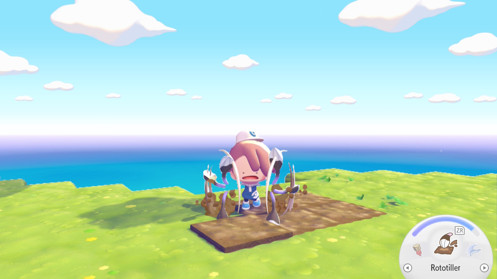
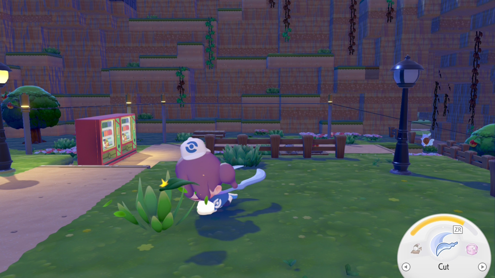
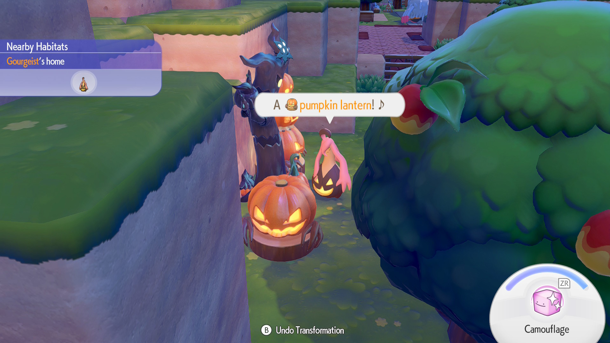

What is Rototiller Used For?
Rototiller is a move unlocked in the early game of Pokémon Pokopia. It is learned from Drilbur during their request for a habitat.Rototiller is used to till soil, turning it into crop fields to plant seeds. It can also be used to move plants like flowers to other locations.
Rototiller cannot be upgraded with food.
How To Use Rototiller
To activate the move, press the ZR button with Rototiller selected on your circular moves menu. The affected block will be highlighted.

What is Cut Used For?
Cut is a move unlocked in the early game of Pokémon Pokopia. It is learned from Scyther after completing their request for two sturdy sticks.
Cut allows you to slice through plants and wooden objects when used. This is useful for collecting materials.
The upgraded move can be achieved by eating bread. It allows you to cut chains and metal grates, and launch a wave forward that cuts things further in front of you.
How To Use Cut
To activate the move, press the ZR button with Cut selected on your circular moves menu. The affected block or object will be highlighted. You may need to use Cut multiple times for some objects (ex. wood).
What is Camouflage Used For?
Camouflage is a move unlocked in the second town, Bleak Beach, in Pokémon Pokopia. It is learned from Zorua.
Camouflage allows you to transform into a block or object in front of you. This is mostly used for the Hide-and-Sneak game played with Zorua or other players in multiplayer.
During the Pumpkaboo Event from October 17 to November 1, 2026, Camouflage could be used to get Pumpkin Candy from Pokémon by surprising them.
How To Use Camouflage
To activate the move, press the ZR button with Camouflage selected on your circular moves menu. The block or object you will camouflage as will be highlighted. When transformed, you can move around and jump as normal.